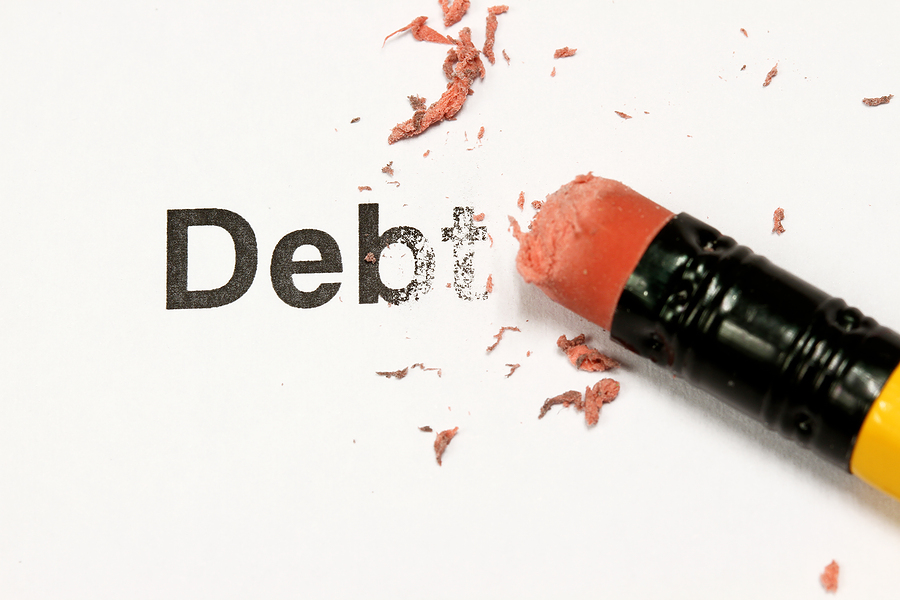
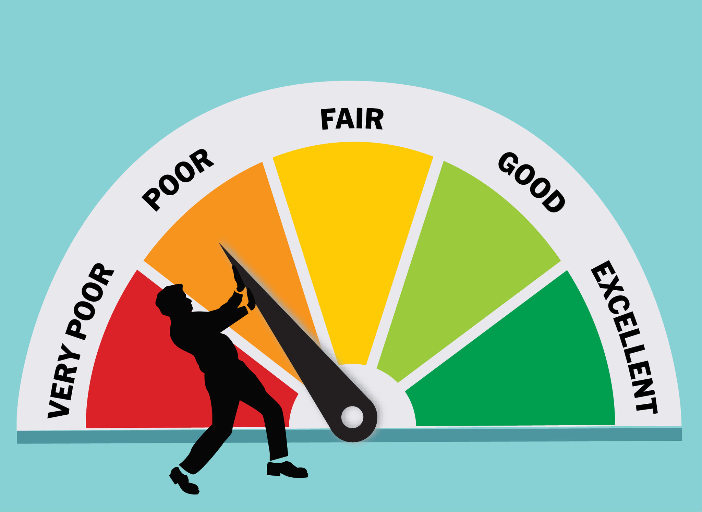
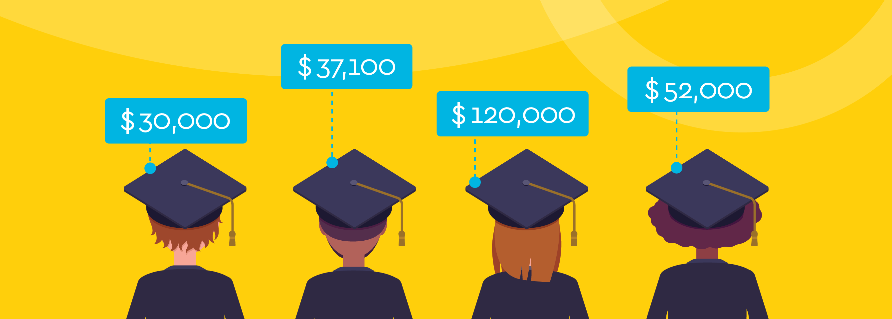

Facing the Facts: If you've been trying to make bills vanish by throwing them away unopened,
the first step is to own up to your mistakes. Clear off your kitchen table and get out all your loan statements,
bills, and budget—basically everything you can think of that relates to your finances. Start adding.
The loan/credit card payments and the bills for essentials (power, heat, and water, for example) will represent
your base payments. If these already substantially exceed your net income, you will either have to change your
lifestyle significantly (sell the house, get a smaller apartment, take on a second job) or file for bankruptcy.
Or, there may be some other steps you can take, depending on where you are. First, you need to make a plan.
Start chipping away: To start chipping away debt it is importing to acknowledge what is currently building
debt the fastest. That could be compounding student loans or anything else. Start getting rid of expenses that are just
compounding the money you owe before moving onto other expenses. Obviously, living expenses are needed to be paid first, but
the first thing your extra disposable income should be going toward is this compounding debt.
Don't waste money: You should map out what you need versus what you want. Spending money every morning
at starbucks for a coffee instead of paying a little more upfront for a coffee machine is simply dumb. You will save more in the long run
with just a little thinking. And this goes for a lot of every day expenses that people do everyday. Overtime you can start eliminating
expenses that aren't needed, which in turn, can start chipping away at your debt over time.
Tips for getting rid of debt

Student debt: Student debt is first and foremost the most important debt to get rid of. After graduation
student debt is dangerous and accumulates FAST. Knocking off student debt should be at the top of your priority list. It's most important
to single out what debt you currently have is accumulating the most interest, which is most likely student loans, and start chipping away
at that.
Need vs Want: As mentioned, map out what you need versus want. A lot of the time wants are what
accumulates more and more debt. Get your priorities straight and decide what is not needed that you are currently
buying in everyday life, with time your debt will slowly decrease.
Tips for using debt to your advantage

Building Credit Score: Coming out of college with student loans sounds like the worst thing in the world,
but with some plan and organization it can actually be extremely beneficial. If you are on top of your student loans and do not
let the interest accumulate on you, you can set up payment plans that can improve your credit score. Starting to build a credit
score at a young age can go a long way down the road. Setting up an easy payment plan post college can get you on the right track
right when you enter the real world.
How to not build debt

Don't push things off Again, with student loans, many think that they are untouchable from student loans, but that is
just false. When you let things go untouched and do not act on them, debt accumulation compounds and before you know it you
can't even breath when looking at how much you are in debt. Student loans are the first debt on everyone's balance sheet coming into
the real world, so set up a plan to start making the payments and prioritize that over everything. The same goes for debts in the future,
don't pay for some other luxury item if you have debts that need to be paid. That is how people get into the "trap", once debt
starts accumulating people just push it off because they think that they will never be able to pay it off so why bother. FALSE!
start chipping away at it and over time you will get results with a plan and place and action taken.